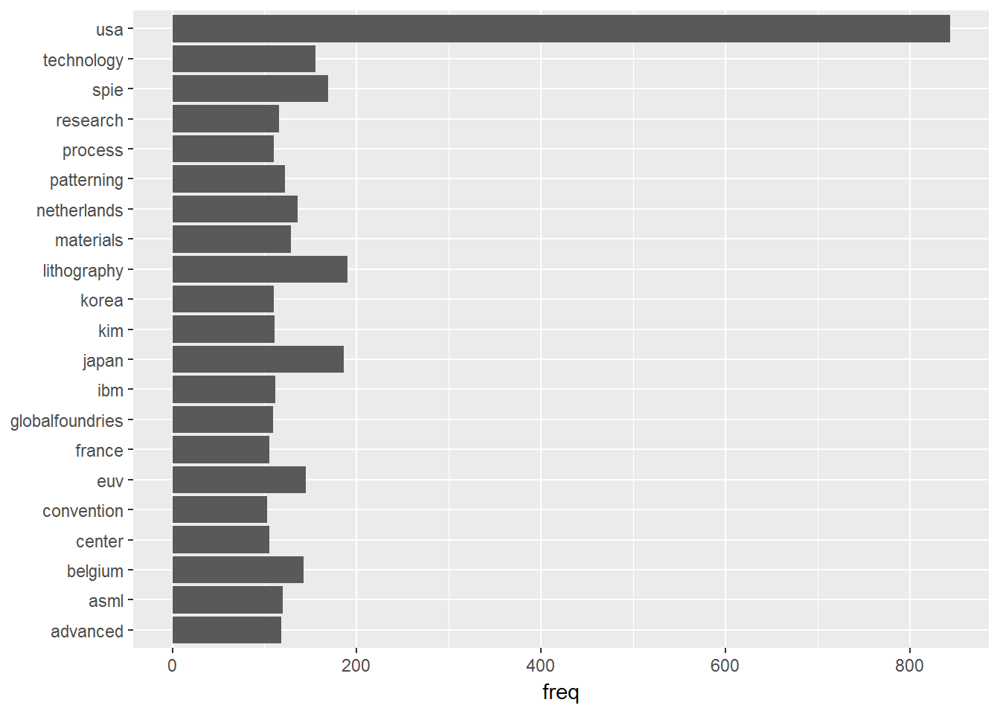

Objectives
With busy work schedule, it is very difficult for Corporate professionals to spare time for attending conference. It is even challenge to be capture the overall technology trends with multi-sessions on-going parallel. The objectives of this topics are two folds:
- Create a workflow to overview the topics of the conference
- Establish methodology for unsupervised learning of topics
The exercise is down within R environment.
Workflow
The workflow includes the following steps:
- Download program and abstracts from conference website
- Read files into R environment
- Pre-processing of the data
- Convert into text mining format
- Visualization
- Validation and confirmation
Solution in R
Download the program
First download the program file from conference website link and save to download folder. Note that within blogdown, the working folder is point to the post. Add “/” before “download” folder saved file to “D:/download/”.
The process is done with curl package.
url <- "http://spie.org/Documents/ConferencesExhibitions/AL17-FINAL-L.pdf"
curl_download(url,"/download/program.pdf")Read file into R enviroment
Note the download program file is PDF file. Here we use pdftools package to read it into text format. The program is saved in an object with one page per vector.
pdf_file <- file.path("/download", "program.pdf")
#info <- pdf_info(pdf_file)
program <- pdf_text(pdf_file)
#First page of the program
cat(program[1])## CONNECTING MINDS.
## ADVANCING LIGHT.
## 2017
## TECHNICAL PROGRAM
## San Jose Marriott and
## San Jose Convention Center
## San Jose, California, USA
## Conferences & Courses
## 26 February2 March 2017
## Exhibition
## 28 February1 March 2017Pre-processing of the data
The program data can be converted into a Corpus object with tm package. It would then allow using tm_map function to clean the files, such as remove white space, numbers and typical stop words.
#shape into corpus, strip whitespace and numbers
text_corpus <- Corpus(VectorSource(program))
#clean up
corpus_clean <- tm_map(text_corpus, stripWhitespace)
corpus_clean <- tm_map(corpus_clean, removeNumbers)
corpus_clean <- tm_map(corpus_clean, content_transformer(tolower))
corpus_clean <- tm_map(corpus_clean, removePunctuation)
# Remove stopwords from English
corpus_clean <- tm_map(corpus_clean, removeWords, stopwords("english"))
my_stopwords <- c("e-ii","can","due","will", # additional user-defined stop words
"fig","figs","figure","online", # stop words related to figure captions
"session", "inc","ltd", "corp", "sps","spwed","spswed","spstue", "committee","conference","chair","program","univ") # stop words related to the conference
corpus_clean <- tm_map(corpus_clean, removeWords, my_stopwords)Convert into text mining format
Text mining package works with TermDocumentMatrix format, which stores term in row and documents in columns. The file tdm has 6250 terms and 76 documents (76 pages from program file).
After converting tdm, we can do some statistics of word and frequency of appearance in the program file. The plot output words that have appeared more than 100 times.
tdm <- TermDocumentMatrix(corpus_clean)
m <- as.matrix(tdm)
v <- sort(rowSums(m),decreasing=TRUE)
d <- data.frame(word = names(v),freq=v)
d %>% filter(freq>100) %>%
ggplot(aes(x=word, y=freq)) +
geom_bar(stat = "identity") +
xlab(NULL) +
coord_flip()
Visualization
After several iteration of word processing and checking frequency, we can select the top 100 words to display with wordcloud.
The wordcloud is processing the same data as barchart. It list key words size vs frequency of the word appearance within the document. It is obvious that this is a spie lithography conference. Other top appearance indicating the topics of the program such as:
1.EUV 2.DSA 3.Design
Other top words seems to be related to the corporate affiliation and their regimes:
- IBM
- ASML and Netherlands
- imec and Belgium
Other top regimes include Korea and Japan.
wordcloud2(head(d,100))Validation and confirmation
The text mining itself could not substitute read the program file to understand the events and topics with the conference. The next step is to read the program and validate some of the findings from data mining.
It could be confirmed the EUV topic has prominent space within SPIE Advanced Litho conference. In fact, conference 10143 is dedicated for this EUV.
The program topics include authors and their affiliation. Therefore, it is confirmed that the occurrence of regime within the word cloud is a good indicator of paper submission.
Round up
With this post, a workflow has been established within R environment to download program file from SPIE Advanced Litho conference. A text mining process has been down to visualize topic 100 key words.
Next work
After a brief view of the topics, it would be interesting to start using machine learning to understand the topics discussed within the conference. There is always several months of time gap between conference and publication of the proceeding. But we could start with the abstract file that is available within the conference website